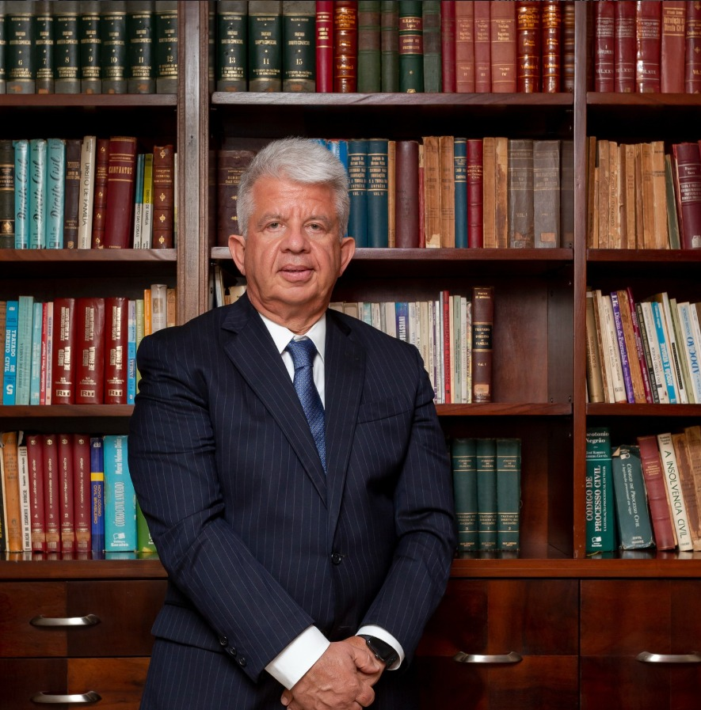

Tradição em Brasília para conduzir os momentos mais importantes da sua família
Há mais de 40 anos ao lado de famílias em partilhas, guardas, pensões e inventários, com atendimento próximo, atento e personalizado.
Quem somos
Fundado em 1985, o Maurício Lindoso Advocacia construiu, ao longo de mais de quatro décadas, uma atuação dedicada e exclusiva ao Direito das Famílias e Sucessões em Brasília.
Sob a direção de Luis Maurício Daou Lindoso, sócio fundador, a equipe de advogados atende cada cliente de forma personalizada e cuidadosa, com especialistas em partilha de bens, guarda, pensão alimentícia e inventários.
Cada caso que envolve família carrega uma história única, e é com essa atenção que conduzimos cada processo, do primeiro encontro à resolução.
Atuação exclusiva em Direito de Família e Sucessões, com profundidade em cada uma das frentes abaixo.
Partilha de Bens
Divisão de patrimônio em separações e divórcios, com equilíbrio entre os interesses das partes.
Guarda de Filhos
Definição de guarda e convivência familiar com foco no melhor interesse da criança.
Pensão Alimentícia
Fixação, revisão e execução de pensões alimentícias com base técnica e justa.
Inventários
Condução de inventários judiciais e extrajudiciais, com agilidade na partilha de herança.
Pronto para conversar sobre o seu caso?
Agendar uma conversa
Luis Maurício Daou Lindoso
À frente do escritório desde sua fundação em 1985, Luis Maurício Daou Lindoso construiu uma trajetória dedicada exclusivamente ao Direito das Famílias e Sucessões em Brasília. Sob sua direção, a equipe mantém um padrão de atendimento próximo e dedicado, acompanhando cada cliente com atenção em todas as etapas do processo.
Nossa Equipe
Profissionais com alto rigor técnico e dedicação exclusiva para conduzir os processos do seu caso.
Luis Maurício
Sócio FundadorLuis Maurício foi vice-presidente da comissão de Família e Sucessões da OAB/DF,
procurador Jurídico da Companhia do Metropolitano do Distrito Federal e atualmente é
sócio da Maurício Lindoso Advocacia.
Especialista em direito Civil e Processo
Civil pela Escola da Magistratura do Distrito Federal, foi membro do IBDFAM/DF por mais
de 10 anos, participou de diversos congressos nacionais e organizou o VII Congresso de
Direito das Famílias do DF.
Alex Lindoso
Coordenador JurídicoAlex Lindoso é formado em Direito e em Filosofia, trabalha na Maurício Lindoso advocacia
há mais de 10 anos e já foi professor da fundação educacional do Distrito
Federal.
Responsável pela área de resolução de conflitos extrajudiciais e
sucessões. Coordenador Jurídico do Instituto No Setor, secretário da Comissão de
Planejamento Sucessório da OAB, com cursos em Harvard, ENAM e INSPER.
Vanês Junior
Advogado AssociadoVanês G. de Lima Júnior é especializado em Direito de Família e Sucessões. Possui
pós-graduação em Direito Civil e Processo Civil pela AMAGIS e cursa pós em Direito de
Família e Sucessões pela LEGALE.
Membro do IBDFAM e faz parte da Comissão de
Planejamento Patrimonial e Sucessório da OAB/DF.
Alice Pereira
AdministrativoAlice Pereira é graduada em administração e trabalha na Maurício Lindoso advocacia há
mais de 15 anos. Cuida do agendamento das consultas, atendimento ao cliente e
organização interna do escritório.
Reconhecida pela sua memória prodigiosa e por
sua organização, Alice é extremamente atenciosa e prática.
Mais de 40 anos de experiência, atendimento de poucos clientes por vez
Quatro décadas de experiência e atendimento a poucos clientes por vez, para que cada caso receba a atenção que merece.
Tradição consolidada
Mais de 40 anos atuando exclusivamente em Direito de Família e Sucessões em Brasília.
Atendimento personalizado
Cada cliente é acompanhado de perto, com cuidado em cada etapa do processo.
Especialização real
Equipe dedicada exclusivamente às particularidades do Direito de Família.
Cuidar da sua família começa aqui
Fale com o escritórioDo primeiro contato à resolução do seu caso
Primeiro contato
Você entra em contato pelo telefone, e-mail ou formulário do site, e descreve brevemente sua situação.
Conversa inicial
Reunião com a equipe para entender o caso em detalhes e esclarecer o caminho jurídico mais adequado.
Condução do processo
Acompanhamento diligente de cada etapa, com atualizações claras sobre o andamento do seu caso.
Resolução
Trabalho até a resolução do caso, com a atenção que cada situação familiar merece.
Vamos conversar sobre o seu caso
Entre em contato e agende uma conversa com nossa equipe.
Brasília, DF, CEP 70.306-906
Prefere escrever?
Conte um pouco sobre o seu caso e retornaremos o quanto antes.